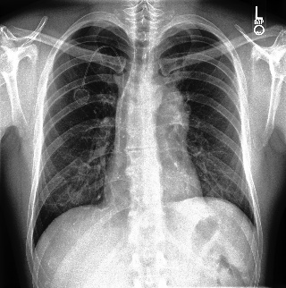
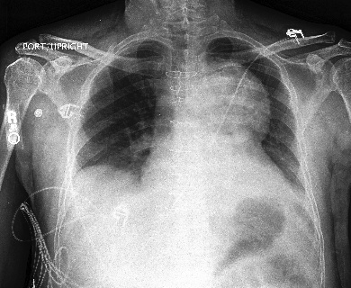
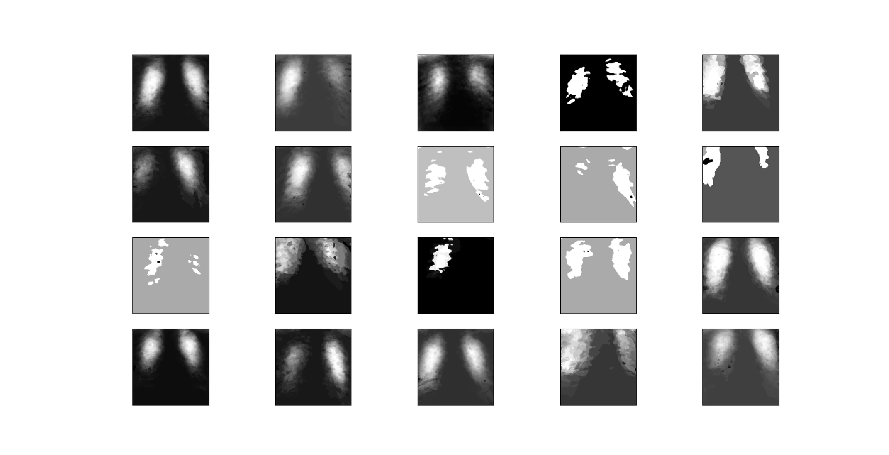
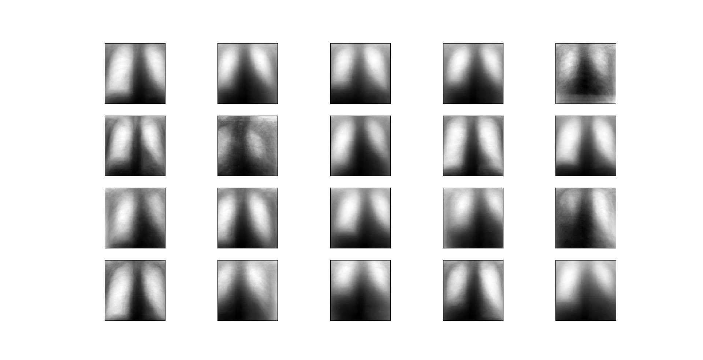

Overview
This page documents our semester project for Georgia Tech's masters level Machine Learning course in the fall of 2019. The goal of the project was to create a program capable of taking in X-ray images of a human chest and using those images to determine if the patient has a condition called Pleural Effusion.
Data
Our data came from a Stanford project called CheXpert. The CheXpert project provides a large dataset of labeled X-ray images. More information on the CheXpert project can be found here.
While the dataset contained images of a variety of different medical conditions, we elected to focus on only one condition: Pleural Effusion. We chose Pleural Effusion because there was a large number of positive cases of the condition in the dataset. Focusing on only one condition allowed us to experiment with multiple methods of classification. Below are example images for patients with and without Pleural Effusion.
No Finding:
Pleural Effusion:
Strategy
Going into the project, we were not sure what learning algorithm would be best suited for our needs. Because of this, we decided to try several different classification algorithms and work from those results. We tried two unsupervised algorithms: K-Means and Gaussian Mixture Model (GMM). Neither algorithm produced very good results. We also tried two supervised learning algorithms. The first was Convolutional Neural Networks (CNN). The second was FINISH THIS. Each attempt will be documented in more detail below.
K-Means and GMM
We used the sci-kit learn python packages for our implementation of K-Means and GMM. The first attempt at clustering ended with a classification that effectively split the data into clusters of frontal images and lateral images. The differences between the two angles was too great for our algorithm to successfully identify our target condition. To counter this problem, we only considered frontal views in our clustering. Every data case has at least one frontal image, with lateral images being taken only if more information was needed, so removing the lateral images produced only a minimal effect on our data.
To attempt to capture more complex data, we created 20 different clusters for each algorithm, with the intent that some clusters would be composed of mostly positive Pleural Effusion data while the rest of the clusters were mostly No Finding. Even with 20 clusters and only the frontal images being considered, both K-Means and GMM struggled to produce any meaningful results. Our conclusion is that unsupervised clustering is simply not powerful enough to assist in this project without significant data preprocessing to bring out the important features.
Below are the images we reconstructed for the 20 clusters we created.
K-Means:
GMM:
